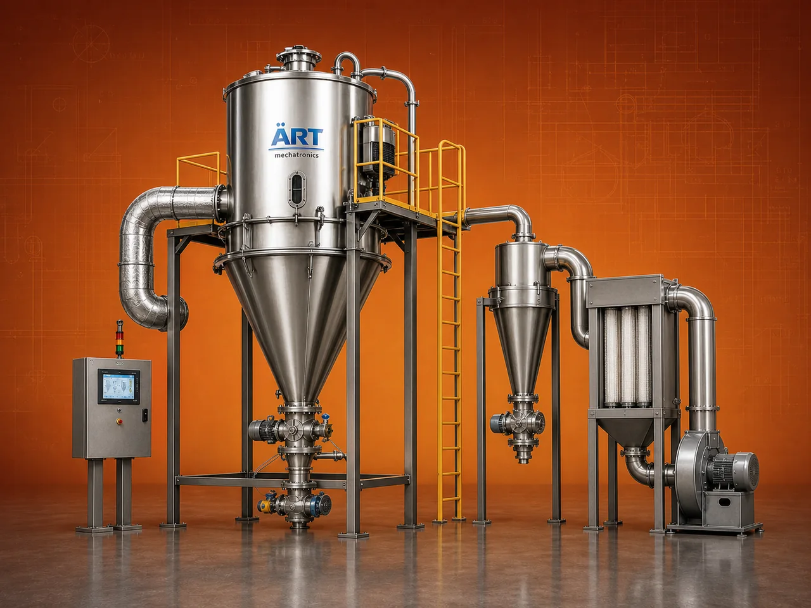

Spray Dryer Machine (Industrial Liquid to Powder Drying System)
A Spray Dryer Machine, also known as an Industrial Spray Drying System, is an advanced technology used to convert liquid or slurry into dry powder form by spraying it into a hot air stream.

About the Spray Dryer
This process enables instant drying, uniform particle size, and high-quality powder production, making spray dryers essential in industries such as dairy, food processing, pharmaceuticals, chemicals, nutraceuticals, and specialty materials.
Spray drying is widely used for producing milk powder, coffee powder, flavor powders, protein powders, detergents, chemicals, and pharmaceutical products, where consistency, solubility, and product quality are critical.
ART Mechatronics offers high-efficiency spray dryer machines, engineered for precision drying, energy optimization, and large-scale continuous production.
One machine, many names
Buyers search for this equipment under many terms — we manufacture all of them:
Working Principle of Spray Dryer
Types of Spray Dryers
Industries Using Spray Dryer
🥛 Dairy Industry
- Milk powder
- Whey powder
☕ Food & Beverage Industry
- Coffee powder
- Flavor powders
💊 Pharmaceutical Industry
- Drug powders
- Active ingredients
⚗️ Chemical Industry
- Chemicals
- Detergents
🌿 Nutraceutical Industry
- Protein powders
- Supplements
🧴 Specialty Products Industry
- Cosmetic powders
Features & Advantages
- Converts liquid directly into powder
- Instant drying process
- Uniform particle size
- High-quality powder output
- Continuous operation
- Suitable for heat-sensitive materials
- Scalable for large production
Technical Highlights
- Capacity: Custom (kg/hr to tons/hr)
- Drying Type: Spray drying (liquid to powder)
- Atomization: Nozzle / Rotary
- Heating Source: Hot air generator
- Construction: Stainless Steel (food/pharma grade)
- Control System: PLC-based (optional)
Turnkey Spray Drying Solutions
ART Mechatronics offers:
- Complete spray drying system design
- Feed preparation and atomization system
- Integration with hot air generator
- Powder collection system
- Installation & commissioning
- After-sales service & AMC
Why Choose Art Mechatronics
- Expertise in advanced drying technologies
- Customized solutions for liquid-to-powder processing
- High-performance and energy-efficient systems
- Hygienic and GMP-compliant designs
- Proven performance across industries
Applications
- Dairy Processing Plants
- Food Processing Units
- Pharmaceutical Manufacturing Units
- Chemical Processing Plants
- Nutraceutical Production Units
Industries that use the Spray Dryer
Related Heating & Drying machines
Get pricing & specs for the Spray Dryer
Share the product, target capacity, current process and plant location. These details help our engineers discuss the right machine or line configuration.
One partner, from design to start-up
ART Mechatronics designs, manufactures, installs and commissions your Spray Dryer solution with regional presence in India, UAE and Thailand.